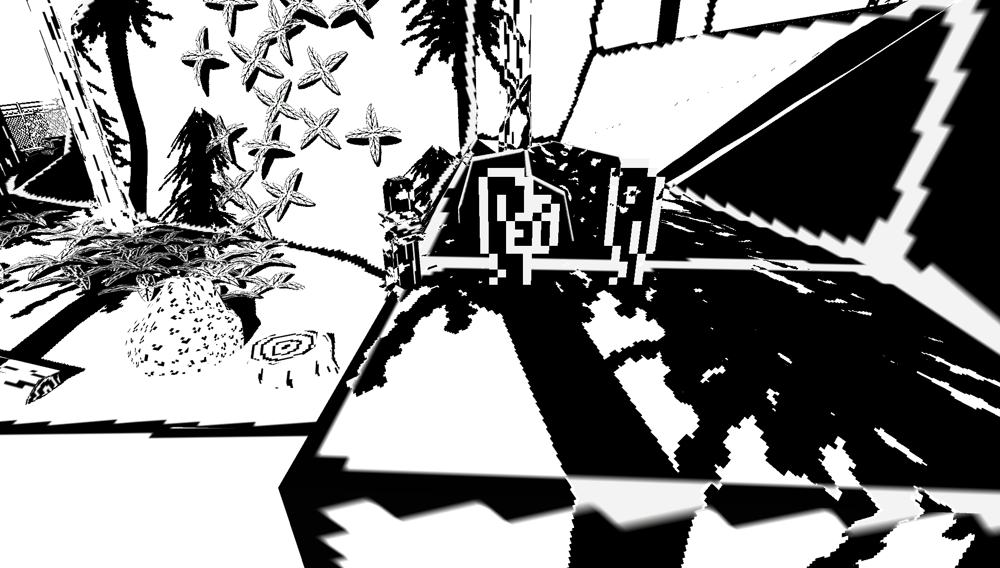
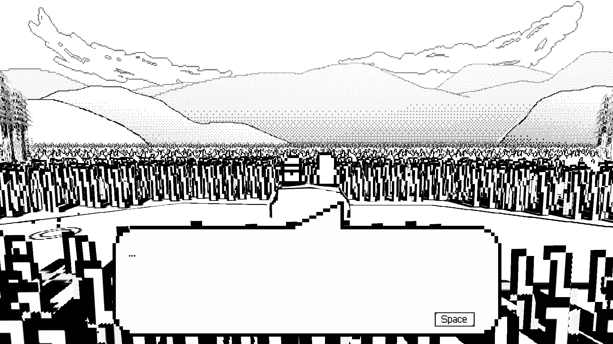

All Projects
About Andrew
All Projects
About Andrew


|
Two Friends In The Woods, One Of Whom Is Dying |

|
Project Type
My Roles
Source CodeDownload and PlayRead the Paper |
|

Two Friends In The Woods, One Of Whom Is Dying is the creative work made for my undergraduate honors thesis at the University of Florida. As a project-based thesis, its focus was on demonstrating the programming and game development skills that I built over my time as a Digital Arts and Sciences (BS) student.
As a game, the project is about two friends going for a hike in the woods and having meaningful conversations about how one of them is dying. In this way, it pushes an envelope that is rarely able to be explored in my degree program - storytelling. I strove to make it impress narratively with the story and technically with its visuals and gameplay; the unique 2.5D, one-bit aesthetic, for instance, is something I've seen variants of, but never implemented in quite this way.
Two Friends is a true representation of how far I grew as a developer in my undergraduate degree. The topics I gained foundations in from coursework on computer graphics and navigational AI proved essential to fulfilling this vision, as did my time working with implementing Valiantine's 2.5D style. If you'd like to know more about exactly how I made the game, I strongly encourage you to read my thesis, linked above!
|  |  |
Programming Accomplishments
|
Other Accomplishments
|

|
Link up on my LinkedIn profile |
Scratch an itch on my Itch.io page |
Send me an email at awk481@gmail.com |
© 2024 Andrew Kohler